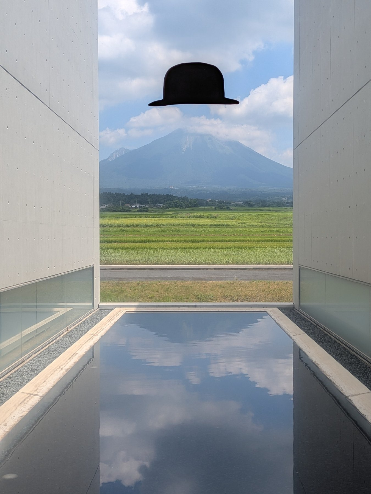

Learning through contrast
Comparing teaching practice without seeking a model to copy.

During summer 2026 I visited Japanese schools and educational settings, observing classroom dialogue, collaboration and the use of models, tools and drawings. The work is considered in relation to Swedish STEM education.
- Host
- Institute of Science Tokyo
- Period
- 2026
- Status
- Analysis and manuscripts in progress
Two strands of writing examine how learners use representations in problem-solving and how a practitioner learns through contrast between educational settings.
Manuscripts in progress; not published research findings.